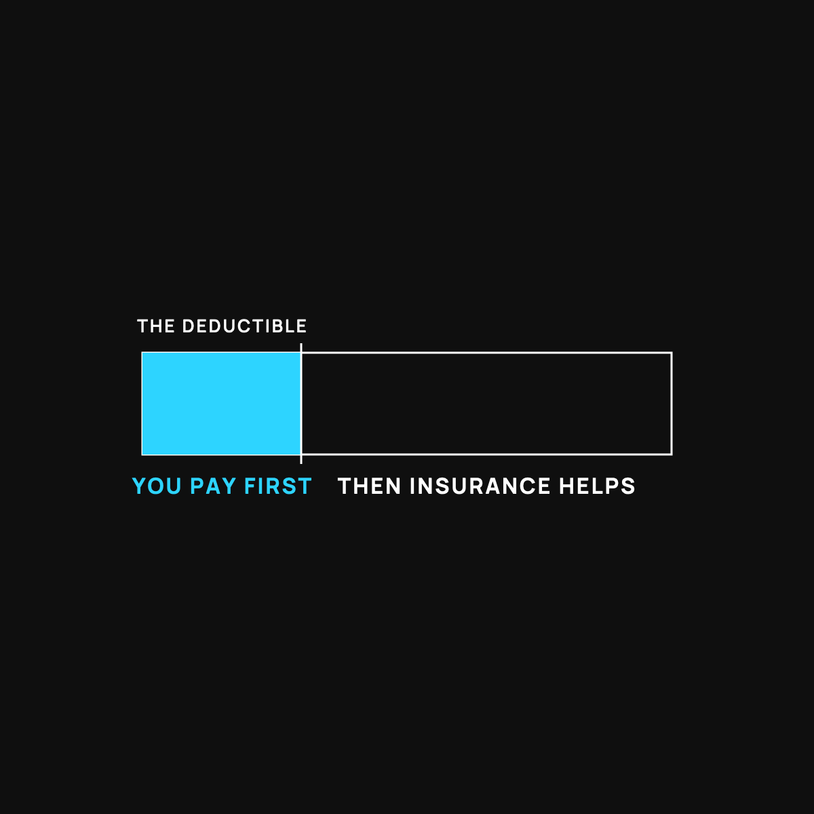

Why You Got a Big Bill With Insurance
You have insurance and still owe money. It's not a mistake. It's three "you first" rules doing their job.
You got a big bill with insurance because insurance is a "you pay first" deal, not an all-you-can-eat pass. Three rules stack: you pay full price until you hit your deductible, you split the bill (coinsurance) after that, and going out of network can erase the discount entirely. Deductibles reset every January.

You have insurance. You pay for it every month. So when a bill shows up anyway, a real one, with a number that makes your stomach drop, it feels like a mistake. It usually isn't. It's how the thing is built.
Here's the short version: health insurance isn't an all-you-can-eat pass. It's a cost-sharing deal with a bunch of "you first" rules baked in. Once you see them, the surprise bill stops being a shock.
The buffet you already paid for
Imagine paying upfront for an all-you-can-eat buffet. You'd expect to walk in and eat, right? Now imagine they still charge you per plate, at full price, until you've spent a few thousand dollars. Only then does the "all you can eat" part kick in.
That's basically your insurance. The monthly premium gets you in the door. But there are three separate ways you keep paying after that.
Rule #1: the deductible (you pay full price first)
The deductible is the pile of money you cover yourself before insurance pays much of anything. If your deductible is $3,000, then your doctor visits, labs, and scans mostly come out of your pocket until you've spent that $3,000. Those are the per-plate charges. You already paid to get in, and you're still paying by the plate.
This is the number one reason for the surprise bill. Most people forget the deductible resets every year, so every January the counter goes back to zero.
Rule #2: coinsurance (you split the check)
Say you finally hit your deductible. Great. Now insurance starts helping, but often it only pays a share, say 80 percent, and leaves you the other 20. That leftover slice is coinsurance. Even when the buffet "kicks in," you're still splitting the check on every plate.
Rule #3: out-of-network (ordering off the menu)
Insurance has a list of doctors and hospitals it made a deal with. That's the network. Go to someone off that list, sometimes without even knowing it, and you can get charged far more, because there was no deal in place. It's like ordering something that wasn't on the fixed-price menu and getting hit with the full à la carte price.
Why this catches everyone
None of these rules are hidden, exactly. They're just buried in language nobody reads until the bill arrives. And they stack. A visit can run through your deductible, then your coinsurance, and land out-of-network, all at once. That's how you "have insurance" and still owe real money.
This isn't bad luck. It's the design. And once you know the design, you can play it better. (For the deeper reason the whole system is wired this way, see Nobody Gets Paid to Make You Well.)
What to do about it
You can't rewrite your plan today, but you can stop getting blindsided.
- Know your deductible number. Just one number. It tells you how much is on you before insurance really shows up. Write it on a sticky note.
- Ask for the cash price anyway. Before you've hit your deductible, paying cash is sometimes cheaper than the "insurance" price. Here's how to ask.
- Confirm in-network before you go. One phone call, "are you in-network for my plan?", can save you the ugliest kind of bill.
- If your plan barely helps until a huge deductible, price out alternatives. Health sharing works differently and is worth comparing for some folks.
The takeaway
A big bill with insurance isn't a glitch. It's the deductible, the coinsurance, and the network doing exactly what they were built to do. You paid to get in the door. Knowing the three "you first" rules is how you stop paying full price by the plate.
Questions I get about this
What is coinsurance?
It's the share of the bill you still pay after you've hit your deductible. If your plan pays 80 percent, you pay the other 20. Even when the insurance "kicks in," you're still splitting the check on every plate.
What does out-of-network mean?
Your insurer has a list of doctors and hospitals it made a deal with. That's the network. See someone off the list, sometimes without knowing it, and there's no deal in place, so you can be charged far more. One phone call, "Are you in-network for my plan?", prevents the ugliest kind of bill.
Why do medical bills sting more early in the year?
Because your deductible resets every January. The counter goes back to zero, so the first visits and labs of the year come mostly out of your pocket until you've spent your way back up to the deductible.
How can I avoid a surprise medical bill?
Know your deductible number, ask for the cash price before you've hit it, and confirm in-network before you go. If your plan barely helps until a huge deductible, it's worth pricing alternatives like health sharing.

Written by David Dewese
Normal guy with a full-time job, wife, and kids. Spent twenty years pursuing music and creative ventures before starting a family. Sharing tips and tricks on how to thrive while living on an artist's income. Not a financial advisor. More about me.
New here?
Normaltown USA is plain-English money and healthcare help for normal people, written by a regular guy with a family of four. No jargon, no hype. Start here, or read the FAQ.